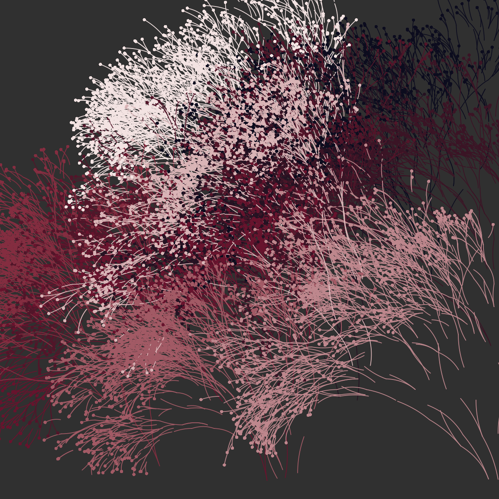
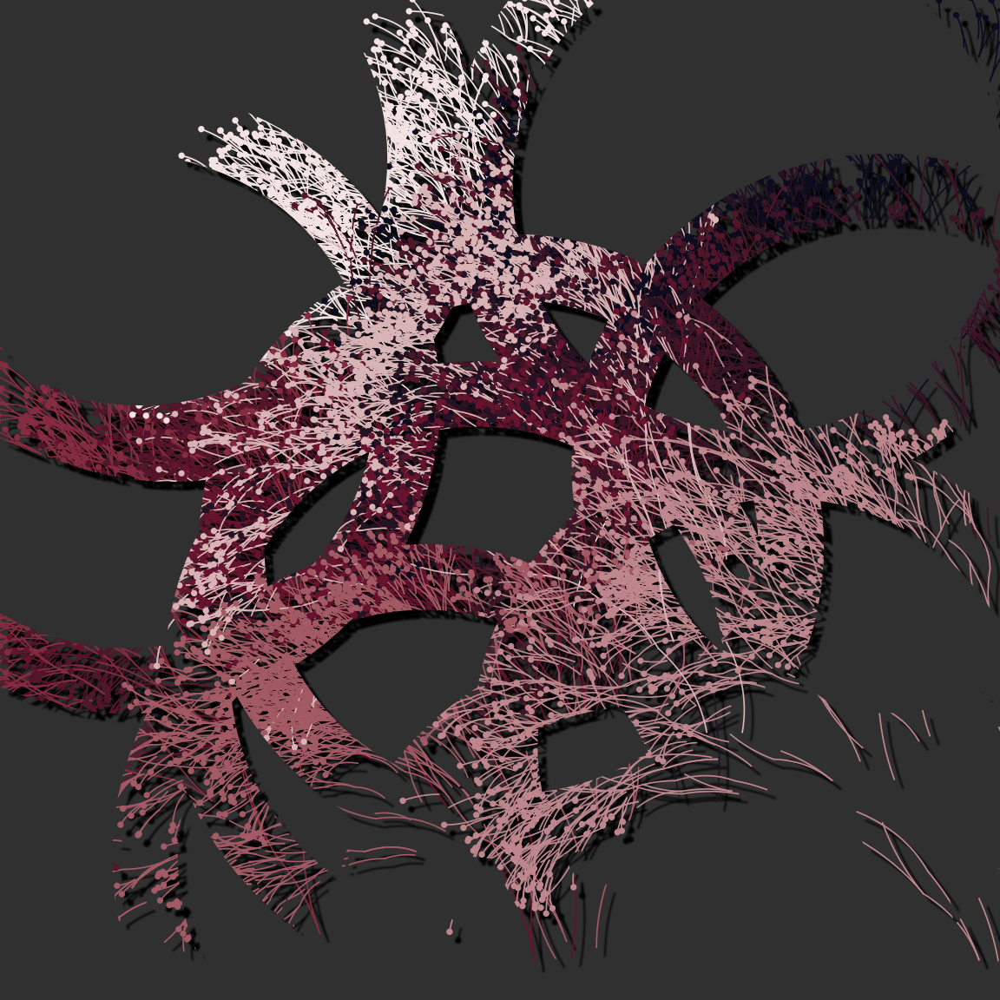
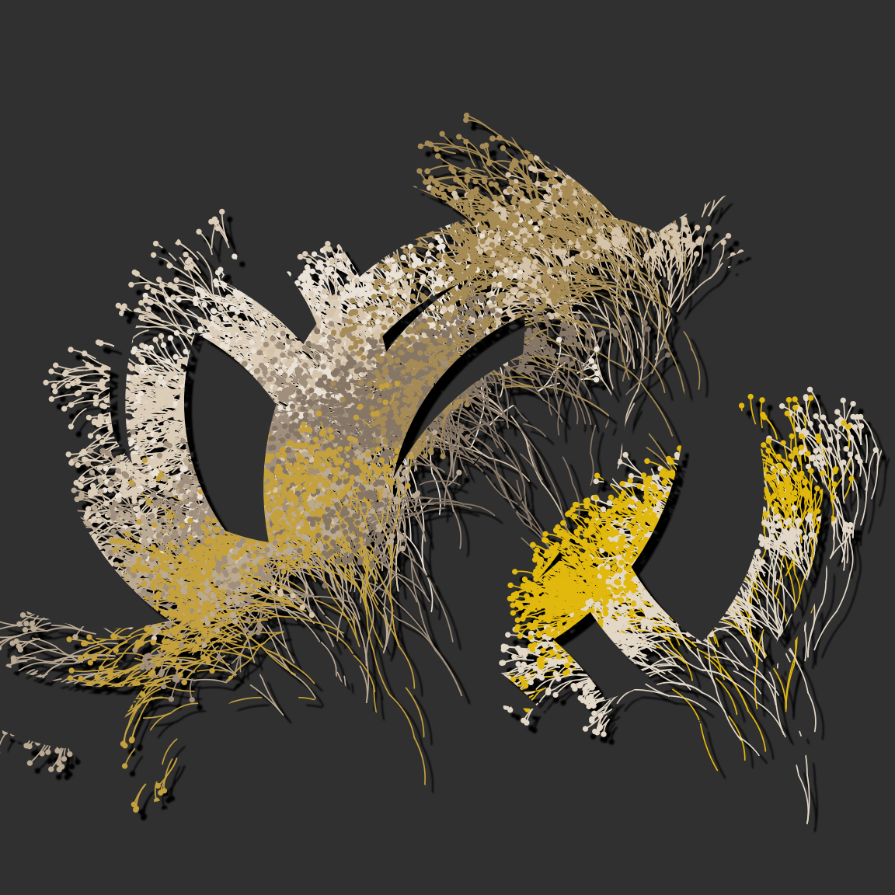
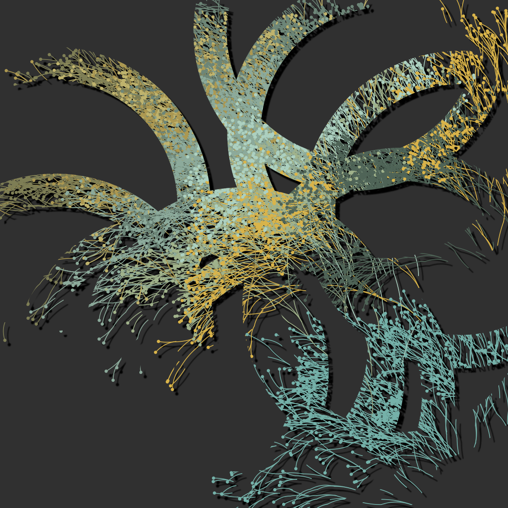
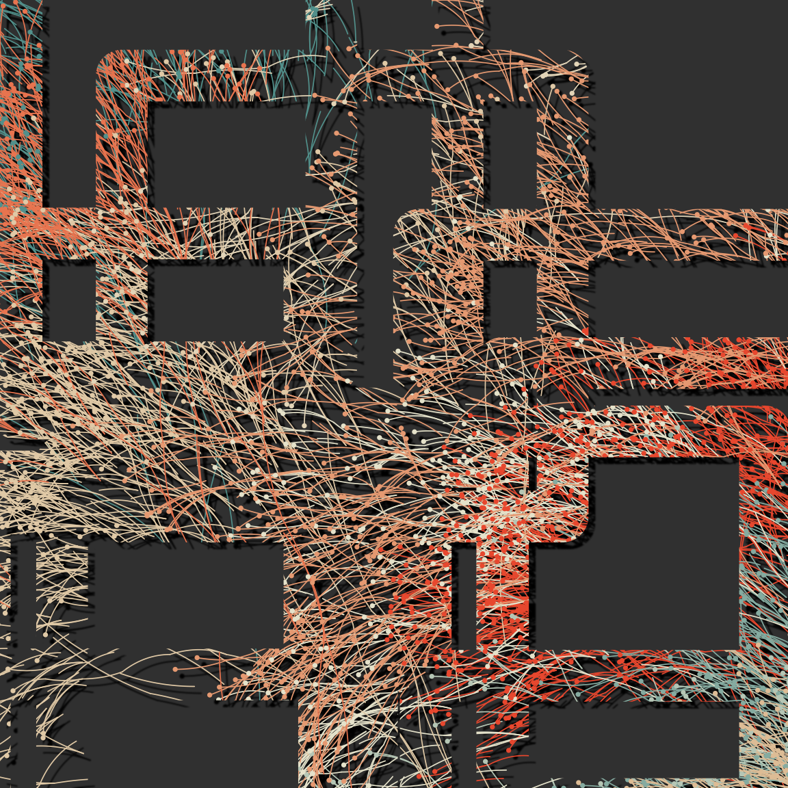

library(dplyr)
library(tibble)
library(ggplot2)
library(ggforce) # inc deldir
library(ggthemes)
library(voronoise) # github: djnavarro/voronoise
library(ggfx)
library(flametree)
library(ambient)
library(tictoc)PIXEL FILTERS WITH GGFX
native_flora <- function(dat, shades, xlim = NULL, ylim = NULL) {
dat <- dat |>
group_by(id_tree) |>
filter(
id_path %in% sample(max(id_path), 0.4 * max(id_path)),
id_time > 2
) |>
mutate(
coord_x = coord_x + runif(1, min = -3, max = 3),
coord_y = coord_y + runif(1, min = -3, max = 3)
) |>
ungroup()
leaf <- dat |>
filter(
id_time == max(id_time),
id_step == 2
)
dat |>
ggplot(aes(
x = coord_x,
y = coord_y,
group = id_pathtree,
colour = id_tree
)) +
geom_bezier(
alpha = 1,
size = 0.3,
show.legend = FALSE,
lineend = "round"
) +
geom_point(
data = leaf,
show.legend = FALSE,
size = 1.3,
stroke = 0
) +
scale_size_identity() +
scale_color_gradientn(colours = shades) +
theme_void() +
coord_equal(xlim = xlim, ylim = ylim) +
theme(panel.background = element_rect(
fill = "#303030", colour = "#303030"
))
}
tic()
dat <- flametree_grow(
time = 11,
trees = 10,
seed = 286,
scale = c(.8, .9, .95)
)
pic <- dat |>
native_flora(
shades = c("#0c0c1e", "#74112f", "#f3e3e2"),
xlim = c(-6, 2),
ylim = c(1, 9)
)
pic
toc()12.49 sec elapsedflora_fx <- function(dat,
shape = 1,
shades = NULL,
xlim = NULL,
ylim = NULL,
seed = NULL) {
if(is.null(shades)) shades <- sample(canva_palettes, 1)[[1]]
if(is.null(xlim)) xlim <- range(dat$coord_x)
if(is.null(ylim)) ylim <- range(dat$coord_y)
if(!is.null(seed)) set.seed(seed)
dat <- dat |>
group_by(id_tree) |>
filter(
id_path %in% sample(max(id_path), 0.4 * max(id_path)),
id_time > 2
) |>
mutate(
coord_x = coord_x + runif(1, min = -3, max = 3),
coord_y = coord_y + runif(1, min = -3, max = 3)
) |>
ungroup()
leaf <- dat |>
filter(
id_time == max(id_time),
id_step == 2
)
dat |>
ggplot(aes(
x = coord_x,
y = coord_y,
group = id_pathtree,
colour = id_tree
)) +
# group the "flora" layers
as_group(
geom_bezier(
alpha = 1,
size = 0.3,
show.legend = FALSE,
lineend = "round"
),
geom_point(
data = leaf,
show.legend = FALSE,
size = 1.3,
stroke = 0
),
id = "flora"
) +
# layer to serve as a "canvas"
as_reference(
geom_point(
data = tibble(
x = runif(10, min = xlim[1], max = xlim[2]),
y = runif(10, min = ylim[1], max = ylim[2])
),
mapping = aes(x, y),
colour = "#303030",
fill = "#303030",
shape = shape,
stroke = 20,
size = 100,
show.legend = FALSE,
inherit.aes = FALSE
),
id = "canvas"
) +
# create a print layer that fills the
# "canvas" layer using the "flora" layer
as_reference(
with_blend("flora",
bg_layer = "canvas",
blend_type = "in",
flip_order = FALSE
),
id = "print"
) +
# add drop shadow because why not
with_shadow("print") +
scale_size_identity() +
scale_color_gradientn(colours = shades) +
theme_void() +
coord_equal(xlim = xlim, ylim = ylim) +
theme(panel.background = element_rect(
fill = "#303030", colour = "#303030"
))
}
tic()
dat <- flametree_grow(
time = 11,
trees = 10,
seed = 286,
scale = c(.8, .9, .95)
)
dat |> flora_fx(
shades = c("#0c0c1e", "#74112f", "#f3e3e2"),
xlim = c(-6, 2),
ylim = c(1, 9)
)
toc()11.398 sec elapseddat |> flora_fx(seed = 999, xlim = c(-8, 4), ylim = c(-1, 11))
dat |> flora_fx(seed = 333, xlim = c(-6, 2), ylim = c(1, 9))
dat |> flora_fx(seed = 666, xlim = c(-4, 0), ylim = c(3, 7), shape = 0)


pixels <- 1000
seed <- 1234
palette <- c("#222222","#e83e8c")
canvas <- long_grid(
x = seq(from = -1, to = 1, length.out = pixels),
y = seq(from = -1, to = 1, length.out = pixels)
) |>
mutate(
lf_noise = gen_simplex(x, y, frequency = 2, seed = seed),
mf_noise = gen_simplex(x, y, frequency = 20, seed = seed),
hf_noise = gen_simplex(x, y, frequency = 99, seed = seed),
paint = lf_noise + mf_noise + hf_noise
)
hexagon <- tibble(
theta = (1:6)/6 * 2 * pi,
x = sin(theta),
y = cos(theta)
)
hextext <- tibble(
x = 0,
y = c(.2, -.2),
text = c("use(code) |>", "make(art)")
)
canvas |>
ggplot(aes(x, y)) +
as_reference(
geom_polygon(data = hexagon, fill = "white"),
id = "hexagon"
) +
as_group(
geom_raster(aes(fill = paint), show.legend = FALSE),
geom_text(data = hextext, aes(label = text), size = 18, colour = "white",
family = "Ubuntu", fontface = "bold"),
geom_polygon(data = hexagon, fill = NA, colour = "white", size = 10),
id = "interior"
) +
with_blend("interior", "hexagon", blend_type = "in") +
theme_void() +
coord_equal() +
scale_x_continuous(expand = c(0, 0)) +
scale_y_continuous(expand = c(0, 0)) +
scale_fill_gradientn(colours = palette)
heart <- function(n = 100) {
tibble(
theta = seq(0, 2 * pi, length.out = n + 1),
x = 16 * sin(theta) ^ 3,
y =
13 * cos(theta) -
5 * cos(2 * theta) -
2 * cos(3 * theta) -
cos(4 * theta)
) |>
mutate(
x = (x - mean(x)) / 17,
y = (y - mean(y)) / 17
) |>
slice_head(n = n)
}
ggplot(
data = heart(),
mapping = aes(x, y)
) +
with_inner_glow(
geom_polygon(colour = NA, fill = "#222222"),
colour = "#e83e8c",
sigma = 50
) +
theme_void() +
coord_equal() +
theme(panel.background = element_rect(
fill = "#222222", colour = "#222222"
))